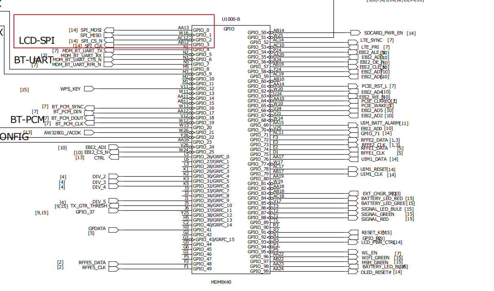

硬件连接图

GPIO配置表
| GPIO | FUNCTION |
|---|---|
| GPIO_0 | SPI_MOSI |
| GPIO_1 | SPI_MISO |
| GPIO_2 | SPI_CS_N |
| GPIO_3 | SPI_CLK |
| GPIO_71 | OLED_A0 |
| GPIO_93 | OLED_PWR_CTL |
设备树配置
代码位置： kernel/arch/arm/boot/dts/qcom/mdm9640.dtsi
1 | spi_0: spi@78b5000 { /* BLSP1 QUP1 */ |
驱动流程
驱动与设备匹配
1 | //SPI Driver Info |
probe函数
probe函数中主要功能就是解析设备树，cs、irq、cpha、cpol等状态，以及对oled的硬件初始化、
注册framebuffer结构体，设置fb_info的var和fix参数
1 | static int spi_oled_probe(struct spi_device *spi) |
oled_reset_pin_config
1 | static int oled_reset_pin_config(void) |
这是利用pinctrl子系统来进行状态选择的，
sh1106g_hw_reset
1 | /*-------------------------------- lcd operation -------------------------------*/ |
这是一个硬件复位，先把reset脚拉低再拉高
sh1106g_disp_init
1 | /** init oled output mode **/ |
fb_ops
1 | static struct fb_ops oled_fb_ops = |
fb_ops 是对framebuffer的操作接口函数
oled_fb_mmap
1 | /* perform fb specific mmap */ |
oled_fb_ioctl
1 | static int oled_fb_ioctl(struct fb_info *info, unsigned int cmd, unsigned long arg) |
总结
提供了ioctl接口来点亮以及关闭oled,上层可以调用响应的ioctl函数。图片的显示利用framebuffer的mmap接口直接映射。避免的数据从用户空间到内核的拷贝。